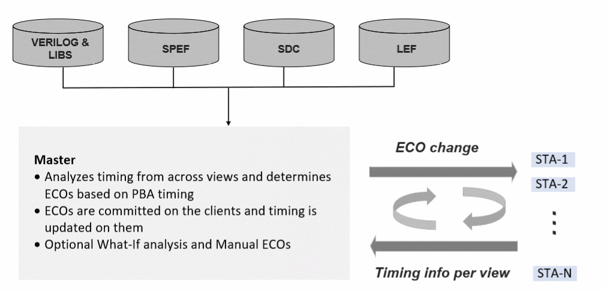

Tempus Paradime Flow Licensing for Interactive ECOs in CMMMC Mode
Tempus Paradime keeps all STA sessions alive so that ECO changes can be committed and timing can be updated incrementally across all views. The Paradime licensing model is based on a master-client architecture (DMMMC), where:
You can stack extra Tempus MP, Tempus L, and Tempus XL licenses to enable more CPUs for each client session. All the licenses are checked out upon startup and are valid throughout the session.
The license flow is illustrated in the diagram below.
Figure -5 Tempus Paradime Flow Licensing in CMMMC Mode

Related Topics
- Tempus License Options for Single View Distributed STA (DSTA)
- Tempus License Options for Distributed MMMC (DMMMC)
- Tempus License Options for Concurrent MMMC (CMMMC)
- Tempus License Options for CMMMC in DSTA Mode
Return to top